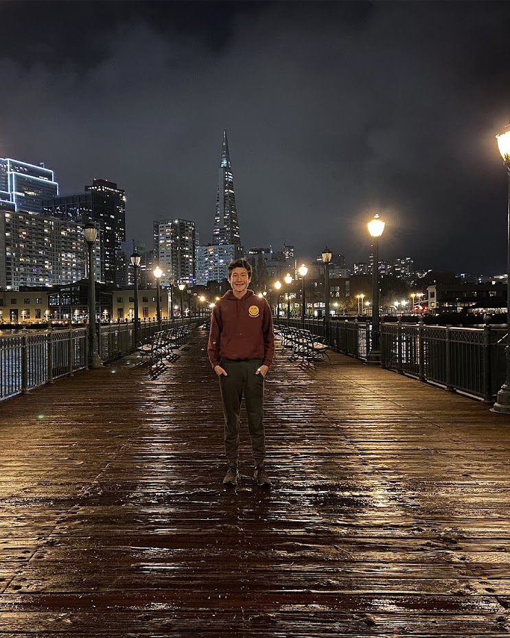
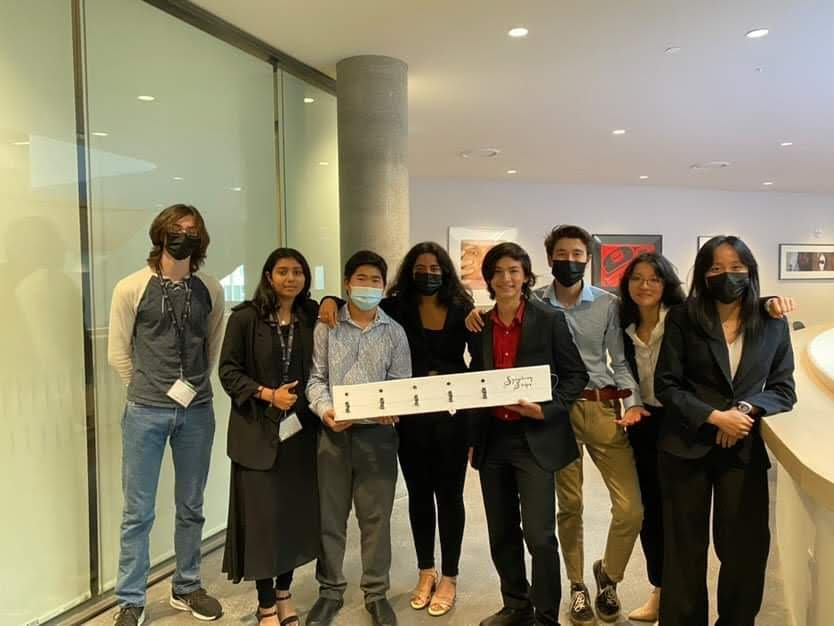

Hello, I am Joshua Dierickse
Welcome to my website, wondering visitor! I am Joshua Dierickse, a young computer enthusiast who is an avid programmer. I currently attend Waterloo Collegiate Institute as a grade 12 student, being passionate in mathematics, science and technology.
Throughout my academic career I have been awarded with the honour role in grades 9, 10 and 11 for my high 90s grades. Furthermore, I was prized with the prestigious computer science merit award for both grades 11 and 12.
Not only do I excel academically but I am also an active leader in my local and school communities. At school, I am a part of numerous clubs and sport teams, a shortened list being: the varsity hockey team, track and field, coding club and chess club which I lead as an exec.
In my community, I am the assistant captain on my competitive hockey team. I also enjoy giving back to the hockey community too by refereeing hockey games for Waterloo Minor Hockey and K-W Inline Hockey League both of which I am currently employed.
* Note this website was made only for desktop computers with a 1080p monitor
About Me Slideshow
←
→
1/6
Shad Carleton Design Group Two's Prototype "Symphony Strips"
Joshua Dierickse's Resume